ViewTouch
User Manual
For servers, hosts, kitchen staff, cashiers and managers
Version 0.8 (Modernization) · October 2026

Contents
- Getting started
- Logging in, clocking in and out
- The floor: tables, takeout and open checks
- Taking an order
- Check options: rush, transfer, move, merge, split
- Paying and closing a check
- Customers, gift cards, house accounts and rewards
- The host stand: waitlist and reservations
- Kitchen, bar and expo screens
- Cash: banks, drawers and tips
- Manager screens
- Reports and End of Day
- Changing the screens (edit mode)
- Phones and tablets
- Backups, safety and starting over
- The self-order kiosk
- Languages (Español)
- Keep running if a computer fails
- Quick reference
1. Getting started
ViewTouch is a point-of-sale system for restaurants. Every screen is made of buttons you can move, resize and restyle yourself (chapter 13), and it runs on Linux computers, touch screens, Raspberry Pi and Android tablets.
One store, any number of screens
One computer keeps the store's data: checks, menu, staff and reports. Every other screen (a terminal) connects to it over the network. All screens see the same checks and tables, and a check open on one screen can't be changed on another at the same time.
Setting up a new computer. On a computer with Linux (Fedora, Debian, Ubuntu or Raspberry Pi OS) and an internet connection, open a terminal and paste:
curl -fsSL https://raw.githubusercontent.com/No0ne558/viewtouchFork/Modernization/modern/packaging/install-viewtouch.sh | sudo sh
It installs everything (a few minutes), then asks what this computer is:
| Choice | What that computer does |
|---|
| 1. Main register | Has a screen and keeps the store's data. Other screens join it. |
| 2. Back-office server | Keeps the data with no screen (a box in the office). |
| 3. Another register | A register that joins the store. |
| 4. Kitchen screen | Shows the orders to make. |
| 5. Self-order kiosk | Guests order on their own and pay at the counter. |
| 6. Time clock | Staff clock in and out and see their schedules. |
| 7. Standby server | A live copy of everything that takes over if the main computer stops (it asks for a pairing code). |
To change it later, run sudo vtmodern-setup again; vtmodern-setup status shows what's set up and the newest backup. A screen that joins the store shows a Join screen the first time: pick the store and type a pairing code (next section).
Screens start full screen at boot and have no way out for staff. To close ViewTouch on a screen, a manager touches Manager → Close ViewTouch twice.
Adding a screen or tablet (pairing)
- On any store screen: Manager → Terminals → Pair a Device. A code like
K7QM4-XHP2W appears. It works once, for 10 minutes.
- On the new screen or tablet, ViewTouch shows Join a ViewTouch store with the stores it found. Pick yours, type the code and a name for the screen (for example "Bar"), and touch Join.
- The new screen now appears in Manager → Terminals, where you choose its receipt printer and whether it has a cash drawer.
The demo store
A new store starts with a demo café: a menu, a floor plan, staff and settings, so you can try everything right away. These are the demo PINs:
| PIN | Person | Role |
|---|
| 1234 | Morgan | Manager (everything) |
| 1111 | Sam | Server |
| 2222 | Casey | Cashier |
| 4444 | Jo | Bartender |
| 3333 | Riley | Busser (clocks in, shares tips) |
| 5555 | Rosa | Server whose screens are in Spanish (chapter 17) |
Change the PINs and staff in Manager → Employees before you open for real.
Phones and handhelds
Every page works on a phone or handheld held upright. The order screen has the check on top and Void, Send and Pay at the bottom. Other pages are laid out again for the tall screen: buttons two or three across, big enough for a finger. Lists such as Manager → Employees show the list first; touch one to open it, and ‹ List goes back.
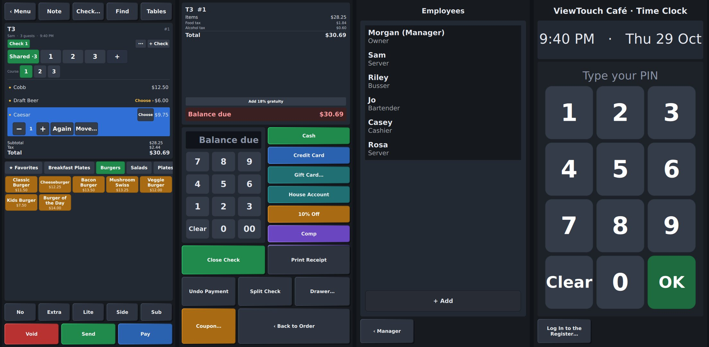
On a phone: a menu page, Pay, Employees and the Time Clock.
A screen counts as a phone when its short side is under 600 (most phones; a folding phone switches as it opens). To choose for a screen, use Manager → Terminals → Screen layout.
Your first day: the setup guide
The first time a manager logs in, the setup guide walks through making ViewTouch yours, one step at a time: your store's name and the lines at the top of receipts, your logo, your colors, your taxes, your first menu items and your team. Skip any step with Next; Finish Later closes it until a manager logs in again, and Manager → Setup Guide… brings it back anytime.

Welcome |

Your logo |

Your colors |

Your team |
The demo's staff (Morgan 1234, Sam 1111…) have PINs printed in this manual. Add yourself as a manager with your own PIN, then touch Turn Off the Sample Staff. If you're logged in as Morgan, Morgan goes off when you touch Finish; then log in with your own PIN.
2. Logging in, clocking in and out

The login screen.
- Log in: type your PIN and touch Enter (or Log In).
- Clock in / Clock out: type your PIN and touch Clock In or Clock Out. You can also clock in after logging in.
- If you work more than one job (a bartender who also serves), it asks Which job today?. Each job has its own pay.

Clocking in with two jobs.
- If the store uses the schedule rule (Store Settings), you can clock in only from a few minutes before your scheduled shift until it ends. A manager can clock you in from the schedule.
A screen nobody touches dims after 10 minutes (Store Settings → Dim the screen after). Touch it once to wake it: that touch doesn't press anything.

The screen saver.
Kitchen screens by station
Each cook can have a screen with only their station's orders. On the kitchen screen, touch Station… until it shows yours (Grill, Fryer, Cold Line…); the screen remembers it. A burger combo's fries appear on the fryer's screen as their own line, "with COMBO BGR", and the fryer bumps them. The expediter's screen shows which stations are still working on each order.

The fryer's screen.
Managers: name the stations in Store Settings → Kitchen stations, one per line, and set each menu item's Made at in Manager → Menu. Want one screen for the whole kitchen? Leave Kitchen stations empty: there's no Station button, and every order shows whole on the Kitchen screen.
Orders for later
Taking a phone order for 6:30, or for Saturday? Touch Ready Later… on the check (or Check… → Ready Later… on any order). Pick the day, the hour and the minutes, then Done, and order as usual. Send saves it: the kitchen gets it by itself 20 minutes before it's due (Store Settings → Orders for later go to the kitchen). The ticket and the kitchen screen say READY AT 6:30 PM, and the open checks list shows when each is due.

Ready tomorrow at 6:30 PM.
An order for another day is paid on that day, and it doesn't hold up tonight's End of Day. As Soon as Possible turns an order for later back into a regular one.
Event tickets
Selling seats for a wine dinner, a class or trivia night? The demo's Wine Dinner Ticket (on the Drinks page) is one: each sale says how many are left, and when all 40 are sold the button shows SOLD OUT. Voiding a ticket gives the seat back. The date and time print on the receipt.
Managers: Manager → Menu → Event tickets: seats and Event date and time (like 2026-10-09 19:00). Turn on Don't show in the kitchen for tickets.
Substitutes
A guest wants a salad instead of fries? Order the burger with No Side, touch Sub in the bar at the bottom, then the salad. It goes on the burger as "SUB House Salad" at its substitute price (+$3.00), not as a $8.50 salad of its own.
Managers: Manager → Menu → Can be a substitute, and its Substitute price.
Not sure what a button does? Hold it
Press and hold any button for a moment: instead of doing anything, a card at the top says what it does (Sends the new items to the kitchen and bar, Adds Classic Burger ($11.50) to the check). Great for a first shift. Touch the card to close it.

Popular today
The Popular card on each menu opens today's best sellers, the most ordered first. It fills itself in as the day goes, so the things people order most are always one touch away.

Another Round
At a busy bar or table: once drinks have been sent, Another Round appears next to the check's name. One touch orders the same drinks again (the ones sent last, with the same sizes and choices); touch Send.
After Send: only a manager can void
Once an order is sent, a server, bartender or cashier can't take items off or change them. −, + and Choose go away on sent items (only Again, which adds a new one, stays). Touching Void on a sent item brings up Manager approval: a manager types their PIN and that one void goes through, and the check's history says who approved it. A server's own PIN doesn't work there. Before Send, anyone can still fix their order.

The Dashboard: today at a glance
Manager → Dashboard shows how the day is going: net sales compared with the same day last week at this time, the number of checks and the average check, labor as a percent of sales (amber when it's getting high, red when it's too high), open checks, how long the kitchen is taking, who's on the clock, today's best sellers, and anything running low or sold out.

Running low: "5 left"
When an ingredient gets down to its Low at amount (Manager → Inventory), the dishes that use it show how many can still be made, like 3 left, so you can warn guests. The number counts down with each order; at zero the dish sells out by itself, and comes back when a delivery is received.

Arrange the menu by touch
On Everything, a manager touches Arrange…. Touch an item to pick it, then ◀ Earlier or Later ▶ to move it, or a color to paint its button. Done goes back to taking orders. No page editing needed.

Change an item right here: a manager holds an item's button (or picks it in Arrange and touches Edit…; + New Item adds one). The card has its name and price, or Sizes… (each size with its price), What's on it (lettuce, tomato, onion: each one can then be No, Lite, Extra or on the Side), its Kitchen name, the Choices it asks for, For sale or Sold out, and its color. Save is one Undo step; All Settings… opens it in the Menu Builder.
A look for each screen
Want the bar's screen dark and the patio tablet light? In Manager → Terminals, choose the screen and pick its Look. Only that screen changes; every other screen keeps the store's look.
Course pacing: fire the next course in a few minutes
When a later course is on hold, touch ⏱ next to Fire Course 2 and pick In 10 min (or 5, 15, 20). The kitchen gets it by itself then; the button shows when. Touch Fire Course 2 to send it sooner, or ⏱ → Don't fire it to go back to firing it yourself.

Kitchen times: late tickets
The kitchen screen learns how long each dish usually takes from the times it's bumped. Each ticket shows its time and its target (7:32 / 12m), turns amber as it gets close, and red with LATE when it's over. To set a dish's time yourself, use Manager → Menu → Kitchen time (minutes).

Opening and closing checklists
Write your store's opening and closing tasks in Manager → Settings (Opening checklist, Closing checklist, one per line). Whoever does a task touches it on the Checklists page (on the Manager page, and on the Log Out page for everyone); it shows who did it and when. End of Day tells you how many closing tasks are left, and the Checklists report keeps each day's record.

Time off and shift swaps
On the Time Clock, after typing your PIN:
- Ask for Time Off…: pick the day (up to four weeks out), a reason if you like, and Ask.
- Give Away next to one of your shifts: it shows up under Up for grabs on everyone else's Time Clock, where a coworker can Take It.

A manager decides in Manager → Schedule → Requests…: Approve or Don't approve. Approving a swap gives the shift to whoever took it. Your requests and their answers are listed on the Time Clock under My requests, and the Dashboard shows how many are waiting.
Overtime warnings
When someone is within two hours of overtime (by the store's daily and weekly rules, Manager → Store), the Time Clock tells them how long they have left, clocking in says so, and the manager's Dashboard marks them in amber. Once they're in overtime it turns red.
Fixing a time punch
Someone forgot to clock out, or clocked in late by mistake? Go to Manager → Schedule → Time Punches…. Choose the punch (the last month's are there), fix Clocked in, Clocked out, the breaks or the job, write the Reason for the change, and Save. + Add adds a punch someone missed; to remove one made by mistake, tick Remove this punch, give the reason, and Save.
Every change is kept: the Labor report marks changed punches with a * and lists what changed, who changed it and why.
At End of Day, anyone still clocked in is listed (in red if it's been over 12 hours) with Clock Out Now.

Time Clock: clock in and out, and see your schedule
On the login screen, touch Time Clock & My Schedule and type your PIN. You see whether you're clocked in, your hours today, and your shifts for the next two weeks. Touch Clock In, Start Break / End Break or Clock Out. It never logs you in to the register, and goes back to the keypad by itself (or touch Done).

Want a screen just for this, like a tablet by the back door? In Manager → Terminals, choose that terminal and set Screen to Time Clock. It then always shows the Time Clock; Log In to the Register… at the bottom is for managers who need the rest.
Discounts are a manager's
Only managers give discounts: 10% Off, Comp, Staff Meal and custom ones. When a server, bartender or cashier touches one, the Manager approval pad asks for a manager's PIN. A staff meal is still recorded as the server's meal.
Custom discounts: on the Pay screen, type the amount on the keypad, then touch $ Off (type 500 for $5.00 off) or % Off (type 15 for 15% off).

To let one trusted person give discounts without a manager, open Manager → Employees, choose them, and set Give discounts and comps to Allow.
Oops: Undo
Took the wrong item off? For a few seconds the bottom of the check says Removed Bacon Burger with an Undo button. Touch it and the item comes back where it was, with its choices.

More of an item: − 2 + and Again
Four burgers? Touch the burger once, then + three times: the check says 4 × Bacon Burger. Under the item you just added (or any item you touch on the check) are −, the number, + and Again:
- + and − change how many. − on the last one takes it off.
- Again adds one more made the same way (Medium Rare with onion rings) as its own line, so you can change it, say, to well done.
- Something already sent to the kitchen only has Again; to take one off, use Void.

Swipe an item on the check: left takes it off (a void once it's sent, which needs a manager as usual), right adds one more. While you slide, the line shows Remove, Void or +1, and turns bright once letting go will do it. A short slide does nothing.
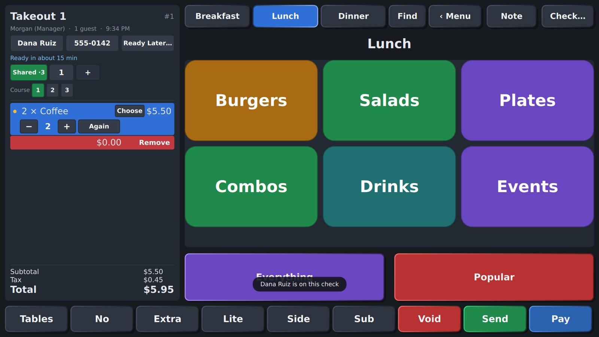
Deliveries and drivers
Deliveries on the Tables page shows every open delivery, the oldest promise first, colored by where it is: gray not sent to the kitchen, amber cooking, green ready to go, blue out with the driver (and for how long), teal back. Late promises are in red.
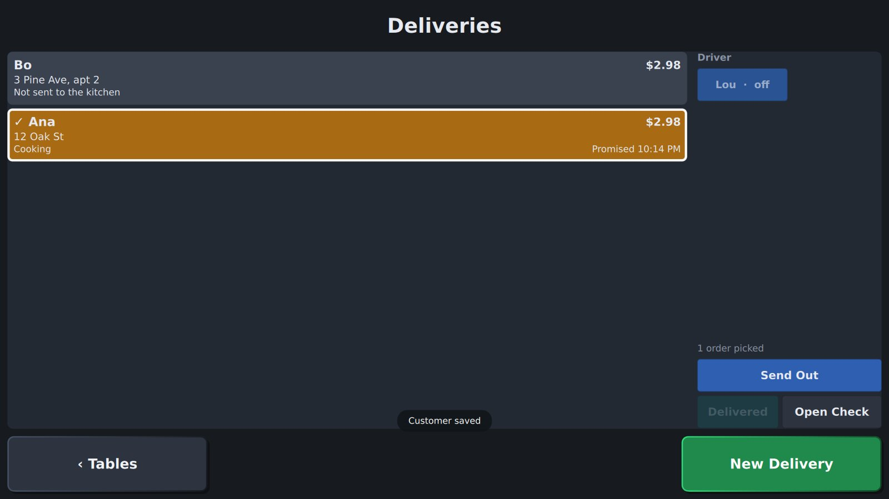
- Send it out: touch the orders going together, touch the driver, Send Out. The check stays with whoever took the order: the sale and the tip are theirs (unless the check is transferred to another server). The driver collects the payment, into their own bank.
- Back: touch the orders, Delivered. The driver logs in, Open Check, and takes the payment. Paying a check that's out counts as delivered too.
- Drivers: give someone the Delivery driver role (or driver as another job) in Manager → Employees. Drivers carry their own bank (the cash they collect, their change and tips) unless their Cash handling says otherwise, and check out like a server.
- Delivery fee: Store Settings → Delivery fee adds it to every delivery once something is ordered (not for food; no tax; no discounts). Taking it off is a void, so it needs a manager.
- Report: Reports → Drivers: deliveries, sales, fees, tips and the average time out, per driver.
Separate checks at one table
A party of six, each paying on their own? Open the table as usual and take the first guest's order. Then touch + Check at the top of the check: a new check opens for the same table, without leaving the menu. Touch a number to go back to any of them. With many checks (a party of 20), the row stays on one line: ‹ and › show the others. The top of the check says which one you're on, like T5 · Check 3.

The ⋯ button next to + has more:
- One Check per Seat: if you used Seat − / + while ordering, one touch gives each seat its own check.
- Print Every Check: a receipt for each.
- Put Them Back Together: one check for the whole table again.

Something on the wrong check? Touch it, then Move…, and pick the check it belongs on (or A New Check).

Each check is sent and paid on its own. Later, touching the table on the floor plan asks which check to open.
Each person's own screen
In Manager → Employees, each person can have:
- Text size: Bigger or Biggest button and check text, just for them.
- Left-handed: the check moves to the right of the order and Pay screens, the menu to the left.
- Start screen: the page they see first after logging in, like the bar tabs for a bartender.
- Language.

The order screen for someone left-handed.
In Manager → Store, Servers start on, Bartenders start on and the others pick a start screen for each job. A person's own start screen wins over their job's.
Switch User
Someone else needs the screen in the middle of your order? Touch Check… → Switch User (or Switch User on the floor plan). They type their PIN and work; when you type yours again, on this screen or any other, your check opens right where you left it. The same happens if the screen logs you out by itself after sitting idle.
Ring items in by number
Know the menu by heart? Every item can have a number (Manager → Menu → Number). With a keyboard, type the number on the order screen and press Enter; on Find, type the number and touch the item. The demo menu's burgers are 101 to 107, salads 201 to 204, drinks 301 to 308.
Barcode scanners
Any USB or Bluetooth barcode scanner that acts as a keyboard works; nothing needs setting up. Scan:
- An item's package on the order screen to ring it in. Give items their barcodes in the Menu Builder (Barcodes: touch the field and scan the package; several are fine), in Manager → Menu, or with a Barcode or UPC column in an imported spreadsheet.
- A coupon on the Pay screen (or any screen with a check open) to take it off the check.
- A gift card to look it up: the Gift Card page opens with its balance.
A scanner types faster than anyone, which is how ViewTouch tells it from someone typing. When a text field is open (the coupon or gift card number), the scan goes into it instead.
Find an item by typing
Don't know where something is on the menu? Touch Find at the top of the order screen and type part of its name: cob finds Cobb, bur every burger. Touch the item to order it; the text clears for the next one.

Sold by weight
Some things are sold by the pound, like the demo's Smoked Brisket. Touch it and the Weigh page asks how much: type the weight from the scale (125 is 1.25 lb) and it shows the price as you type. Touch Add. The check says "Smoked Brisket 1.25 lb" with its price.

The Weigh page: 4.58 lb at $22.00 a pound.
Managers: Manager → Menu → Sold by weight, with the price per pound (or ounce, or kilogram).
Combos
A combo (the demo's Burger Combo) asks for its parts like any other choice: how it's cooked, a side, a drink. Sold-out parts are grayed out. Some cost a bit more (Lemonade +$0.30).

A Burger Combo: temperature, side and drink.
To make one: Manager → Modifier Groups → new group, turn on Options are menu items, and type the items' names, one per line. Then add the group to the combo in Manager → Menu. The parts use up their own stock and appear on the Items report. The kitchen only sees the parts it makes: a drink (its menu item goes to the bar) is left off the kitchen ticket.
Messages between screens
Touch Message… (on the kitchen screen, or the Manager page) to send a note to everyone, the kitchen screens, the floor, or one person: "Need a runner", "86 salmon". It appears across the top of their screens until someone touches OK.
For something everyone should see all shift, pick Show it: Until tonight (or tomorrow night, or a week). It stays up, and shows again to each person who logs in, until then. Whoever posted it, or a manager, can Take Down it early.
Bar tabs
Tables → Bar Tabs shows every open tab. Touch New Tab…, type the guest's name (or "red jacket"), and touch Open Tab: the menu opens. The tab stays on the list all night, even empty, until it is paid. Touch a tab to add the next round, then Pay as usual.

Three open tabs.
Log Out, breaks and your tips

Log Out: your clock status, open checks, tips owed and next shift.
- Start / End Break starts or ends a break. Clocking out ends a break too.
- Cash Out My Tips pays you the card tips you're owed, after any tip-outs to bussers and the bar.
- My Bank… is where you check out your cash at the end of the shift (chapter 10).
- Your next shift from the schedule is shown under your name.
3. The floor: tables, takeout and open checks
The floor plan. Green tables are yours, amber ones are other servers'.
- A table: touch it to start a check there, or to open its check if it has one. The table shows the check's total once it's open.
- Quick Order: a counter sale with no table.
- Takeout / Delivery: opens the menu right away. The check has + Name, + Phone (and + Address for a delivery) and Ready Later… at the top: touch one, type, Save. Typing three digits of a phone number (or letters of a name) shows regulars who match; touch one and their name, phone and address fill in. Name and address stay amber until they're filled.
- Same as Last Time: when the customer is a regular (picked from the list), a button shows their last order, like Same as Last Time: 2 × Coffee, Water. One touch puts it on the check, at today's prices; anything sold out is left off, and it says so.
- Ready in about 20 min: under the name, what to tell the caller. It starts from the usual time (Store Settings → Takeout is usually ready in, Deliveries usually arrive in) and adds a few minutes for each order the kitchen is still making. At Send it becomes the promise, Promised for 6:45 PM, which the Deliveries screen shows too.
- A name before Send: Store Settings → Phone orders need a name before Send stops a takeout without a name (or a delivery without an address) from going to the kitchen. Each person (Employees) and each screen (Terminals) can say otherwise; the screen's setting wins, then the person's, then the store's.
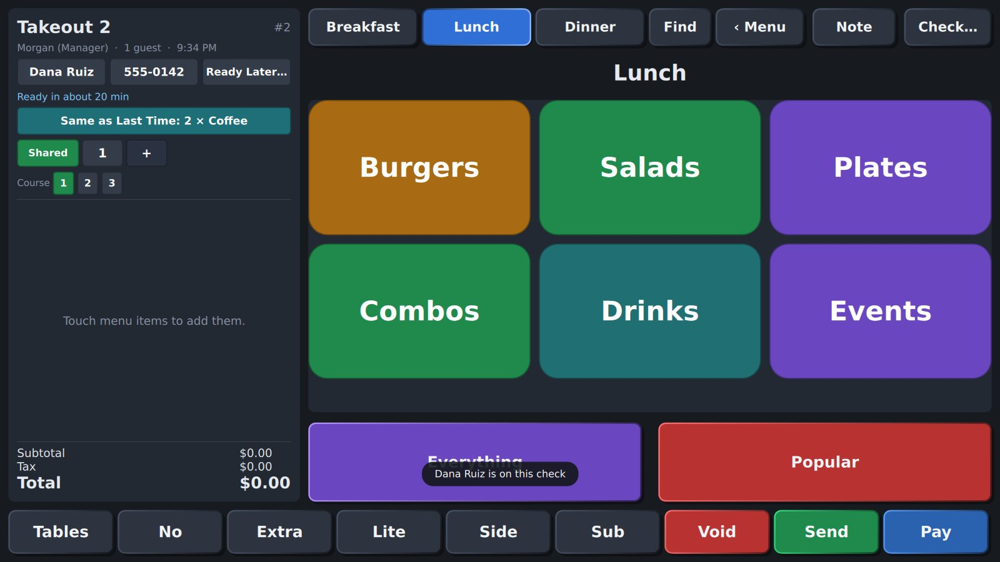
- Open Checks: your open checks (and, for whoever takes payments, the kiosk's orders waiting at the counter); touch one to open it. All Checks shows everyone's: someone else's is dimmed with a 🔒, and opening it asks for a manager's PIN. Managers and cashiers can open anyone's; give anyone else that with Manager → Employees → Open other people's checks. A driver can open the deliveries they're carrying.
- Host Stand: seating, table states, the waitlist and reservations (chapter 8).

How many guests? Type the number (or use − and +), then Start Order.
Tables of 6 or more get the party gratuity automatically (18% to start; Store Settings).
4. Taking an order

The order screen: the check on the left, the menu on the right, the order bar at the bottom.
The tabs at the top switch between the Breakfast, Lunch and Dinner menus. The menu that fits the time of day opens by itself. Touch a category (Burgers, Salads, Drinks) to see its items, and touch an item to add it to the check.

An item page. Touch an item to add it.
Choices for an item
Some items ask for choices on the Choose page beside the check. A burger asks how it's cooked and for a side (onion rings and sweet potato fries cost extra).

A burger's choices: Temperature (choose 1) and Side (choose 1).
Other items ask for a dressing (choose 1), a protein (optional, priced), fillings (up to 3), a drink size… The groups and their options are set in Manager → Modifier Groups (chapter 11), and the self-order kiosk asks for the same choices.

The Choose page. Required choices must be made before Done; Cancel Item takes off what was just added. Touching Choose on an item already on the check changes it: Cancel Changes puts its choices back and leaves it on the check.
An item still missing a required choice can't be sent. Its amber Choose button on the check reopens its choices.
No, Extra, Lite, Side
No, Lite, Extra, Side and Sub along the bottom change how something is made. Touch one (it lights up and says what it's waiting for), then the thing it's for:
- No onion on the burger: touch the burger on the check, then No. Its choices open by themselves; touch Onion. The burger now says No Onion (in red on the Choose page), and so does the kitchen ticket. No and Lite are free.
- Faster: hold a choice. On the Choose page, hold any choice for a moment: No, Lite, Extra or On the Side. Touching it again the same way takes it off; another way changes it (Extra Bacon becomes Lite Bacon).
- Extra costs more: Store Settings → Extra: percent added (50 = half again) and/or Extra: amount added (e.g. $0.75, even on a free choice). Extra then a whole item (not a choice) is a bigger portion at that price.
- Sub swaps a side: Sub, then House Salad or Caesar, in place of the fries, at its substitute price (Manager → Menu → Can be a substitute).
- A "No" doesn't count as the choice: No Fries on a burger still needs a side.
The demo burgers have a Toppings group to try it on: lettuce, tomato, onion, pickles and mayo come on it; cheese, bacon, avocado and jalapeños cost extra.
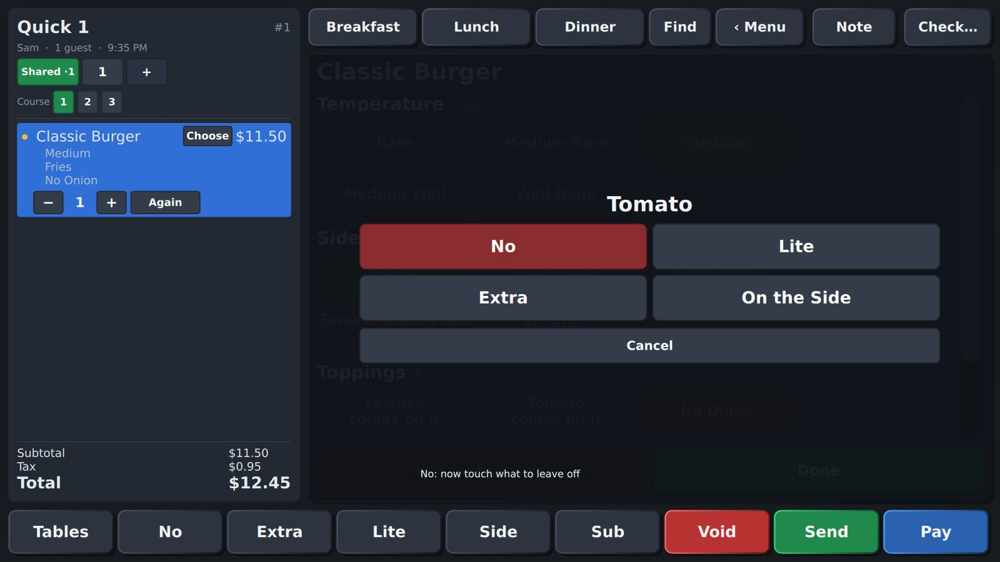
Hold a choice: how to have it |
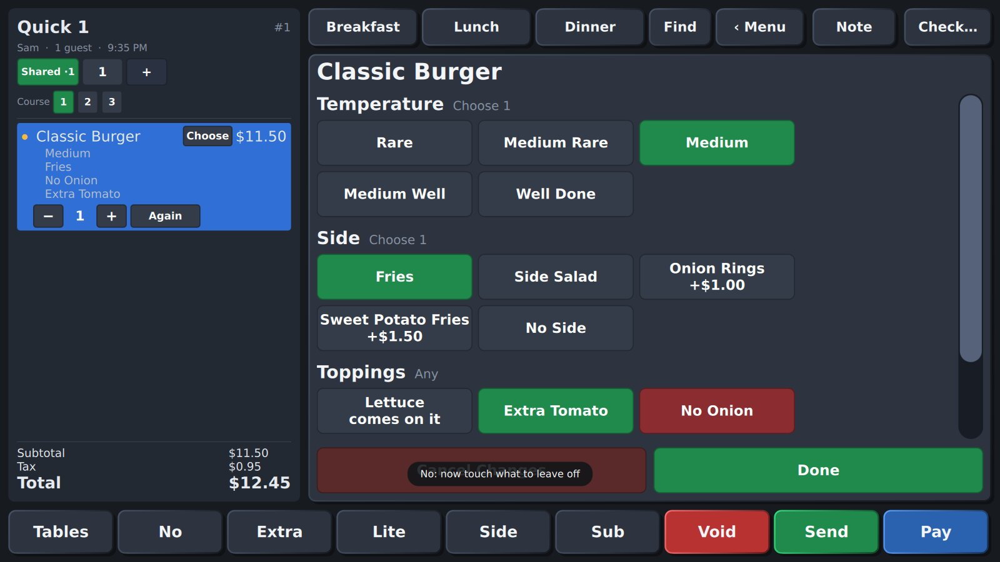
No Onion, Extra Tomato |
Seats and courses

Seat and course controls at the top of the check. The Caesar is for seat 2, course 2, and held.
- Seat − / + sets the seat for the next items. Touch an item first to move it to another seat. The kitchen sees "S2".
- Course 1 2 3 sets the course. Send sends course 1; later courses wait, marked HOLD, until you touch Fire Course 2.
Notes for the kitchen

Note: type a note ("no pickles") and Add Note.
Send, Void and Pay
- Send sends new items to the kitchen and bar (their screens and printers).
- Void removes the selected item. An item not sent yet just comes off. Voiding a sent item needs permission (managers), prints a VOID ticket and is kept in the audit report.
- Pay goes to the payment screen (chapter 6). Tables puts the check away.
5. Check options
Touch Check… (top right of the order screen).

Check Options, with the check's history on the left.
| Button | What it does |
|---|
| Rush | The kitchen does this check first: its tickets jump to the front with a red frame, and printed tickets say RUSH. Touch again to turn it off. |
| VIP | A gold frame in the kitchen, for extra care. |
| Customer… | Find a customer or put one on the check (chapter 7). |
| Sell / Check a Gift Card… | Sell, reload or check a gift card. |
| Transfer to Another Server… | Give the check to someone else. |
| Move to Another Table… | The party moved. |
| Merge Another Check Into This One… | Two tables joined: items, payments and guests come along. |
| Reopen a Closed Check… | Managers: reopen a check closed today (to fix a mistake or refund). |
| Sold Out (86)… | Mark items sold out, or back. |
Servers can transfer, move and merge their own checks; managers can do it to anyone's. Everything is recorded in the check's history.

Transfer |

Move to a table |

Merge |
Split a check

Split Check (on the payment screen): touch an item, then the check it moves to, or + New check.
- One at a time: on a line like "2 × Cheeseburger", each touch of a check moves one of them. Touch All 2 first to move the whole line.
- Share This Item…: cuts an item into even pieces (a $30 bottle of wine 3 ways: three $10 pieces, "Wine (1/3)"…). Move each piece to its check. The kitchen makes it once. Put Back Together makes it whole again.
- Split Evenly…: the check becomes 2 to 9 checks of the same amount. Whole items go around first; what's left is shared in pieces. Any leftover cent goes on one check.
6. Paying and closing a check

The payment (Settle) screen.
- Type an amount on the keypad, or leave it empty to pay the whole balance.
- Touch how they pay: Cash (gives change), Credit Card, Gift Card…, House Account, or a discount (10% Off, Comp).
- For a card tip, touch 15%, 18% or 20%, or type an amount.
- Touch Close Check. Print Receipt prints one; Undo Payment takes the selected payment off.
- Ask Guest for Tip shows tip choices on the customer display (below).
- Add 18% gratuity adds the party gratuity by hand.
- Promotions (Happy Hour…) and rewards appear as discounts by name.
The customer display
A second screen facing the guest shows their order as it's rung up, the total, tip choices and a thank-you.

Between guests: your messages and pictures in turn. |

The order, with their rewards. |

Tip choices, a custom amount, or no tip. |

Thank you, change, points, and a receipt choice. |
- Guests can join rewards by touching Earn rewards and typing their phone number. Only their first name (or the last four digits) is shown, never the number.
- The tip they choose goes on their card payment.
- After paying they choose Print receipt, Text me (when texting is set up) or No receipt.
- The logo, color and messages are set in Manager → Settings. Start the display with
customer-display = auto in the screen's settings file.
Card readers (Stripe)
There are two ways to take cards with Stripe: a reader beside the register (any register: a Linux touch screen, a tablet), run from the store's computer, or ViewTouch running on a Stripe Reader S700 as a handheld.
A reader beside the register
A Stripe S700 or WisePOS E sits on the counter next to the register, on the store's Wi-Fi or network. Touch Credit Card on the Pay screen: the amount appears on the reader, the guest taps, inserts or swipes, and the payment lands on the check with the card. The reader runs Stripe's own software; nothing is installed on it, and nothing needs Stripe's app review.
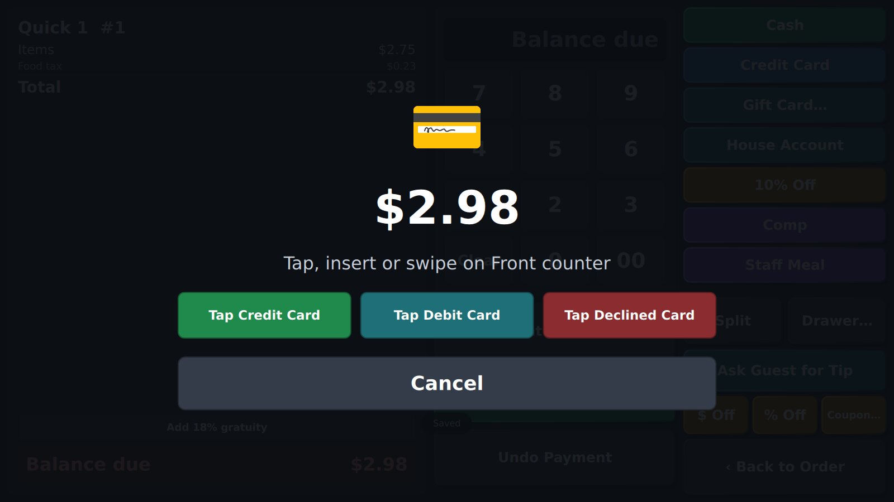
Waiting for the card on the reader beside the register (in Stripe test mode, with test-card buttons).
- Manager → Store Settings → Stripe secret key (see below).
- Manager → Terminals → Card Readers… → + Add: on the reader, swipe in from the left edge → Settings → Generate pairing code, type the code and a name ("Front counter"), Save. The first time, Stripe also needs the store's street address. It shows up in the list when Stripe has paired it.
- Manager → Terminals → the register → Card reader: Reader beside it: Front counter.
- Cancel clears the reader. While the card is being read it says to wait a moment.
- Declined, or the guest pressing cancel on the reader: nothing goes on the check, and it says why.
- The store's computer follows the payment with Stripe, so a register that drops off the network loses nothing: the approved card still goes on the check.
- Tips: Store Settings → Card tips are asked on: the customer display (Ask Guest for Tip), or the reader's own screen (turn on tipping in the Stripe Dashboard → Terminal → Configurations). With tips on the reader, a store can do without a customer display; the display still shows the order as it's rung, rewards sign-up and the receipt choice.
- Try it without a reader: with a Stripe test key, pair the code
simulated-wpe: a simulated reader. The waiting screen then has Tap Test Card and Tap Declined Card.
ViewTouch on the reader
ViewTouch can also take cards itself on a Stripe Reader S700: the ViewTouch app runs on the reader (Stripe calls this Apps on Devices), and when you touch Credit Card on the Pay screen, Stripe's own payment screen asks the guest to tap, insert or swipe. The amount (with the tip the guest chose) goes to the reader; when the card is approved, the check shows it, like Credit Card · Visa •••• 4242, and so does the receipt with Stripe's payment number. ViewTouch never sees the card number.
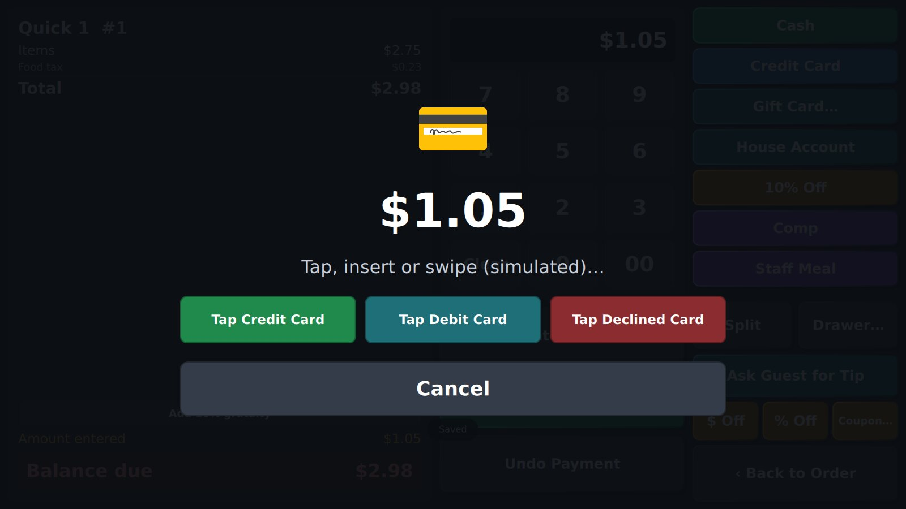
Taking a card (here the simulated reader, for practice): the amount, and Cancel.
- Declined or canceled: nothing goes on the check; it says why. Try again or take another payment.
- Undo Payment on a card from the reader refunds it through Stripe first; the payment comes off the check when Stripe confirms ("refunding…" until then).
- Setting it up:
- Ask Stripe to turn on Apps on Devices for your account (Stripe support, or your sales contact).
- Manager → Store Settings → Stripe secret key: paste your secret key from the Stripe Dashboard (Developers → API keys). It stays on the store's computer; it's never shown again (only its last four), and readers only get short-lived tokens from it.
- Install ViewTouch on the reader (through Stripe: a DevKit for testing, then Stripe's app review and deployment for your readers) and pair it with the store like any tablet.
- Manager → Terminals → that reader → Card reader: Stripe smart reader (this device).
- Practice: Card reader: Simulated on any screen approves cards after a moment (amounts ending in 05 cents are declined), to train staff without a reader.
7. Customers, gift cards, house accounts and rewards
Customers

Customers: find by any part of the phone number or the name.
- Each customer has their phone, email, address, a note ("peanut allergy"), visits, total spent and last visit.
- Put on This Check attaches them to the open check, and they earn points when it's paid.
- Takeout and delivery customers are saved by themselves, and the takeout form suggests regulars as you type.

Takeout: who the order is for.
Rewards (loyalty)
- Customers earn points on what they spend (1 point per dollar to start).
- Rewards take money off: 50 points = $5, 120 = $15, 250 = $35 in the demo. On the Customers screen, with the customer on the check, touch a reward button.
- Undoing the reward gives the points back; reopening a check takes its points back.
Gift cards

Gift cards: type or swipe the number to see the balance and history.
- Sell or Reload: choose an amount; the card goes on the check and works once that check is paid. No number? One is made up and printed on the receipt.
- Pay the Check from This Card takes as much as the card holds.
House accounts
A manager turns on a house account for a customer (with an optional limit). Put the customer on the check, then touch House Account on the payment screen. Payments on the account (cash or card) are taken on the Customers screen.
8. The host stand: waitlist and reservations
Seating
Host Stand on the Tables page opens the seating screen. Hosts start on it when they log in.
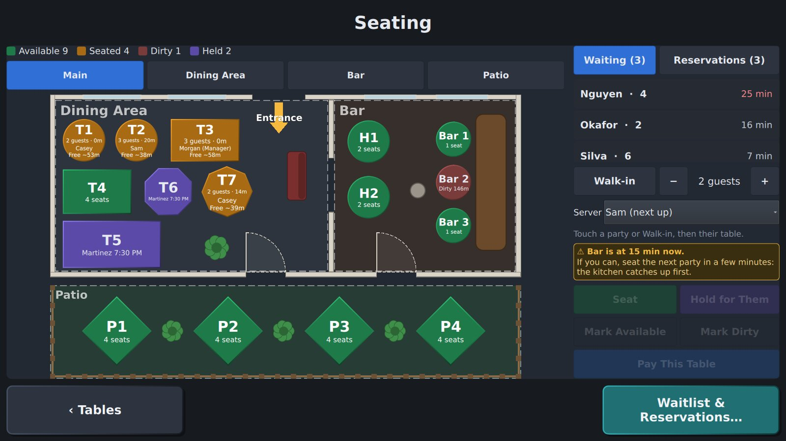
Green: available. Amber: seated. Red: dirty. Purple: held for a party.
- Seat a party: touch them in Waiting or Reservations (or Walk-in, with − / + for how many), touch their table, then Seat. Pick the server first if someone else should have the table.
- A big party: touch several tables to push them together. It shows the seats against the party size. The check opens on the first table; the others show with T5.
- Hold tables for a reservation: touch the party, their tables, then Hold for Them. Nobody else can be seated there. Touch the party when they arrive and their tables are picked again; Seat.
- Bussing: when a table's check closes, it turns red by itself (and so do tables pushed together with it). Touch it, then Mark Available when it's clean. Mark Dirty marks one by hand.
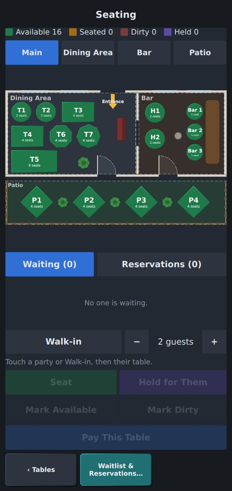 |
On a phone, the tables are on top and the parties below.
Held and dirty tables show on the floor plan too. |
The waitlist

Waitlist on the left; add a party on the right.
- Add to the waitlist: name, phone, party size, a note. The quote (minutes) is worked out for you; change it with −5 / +5. Waits past the quote turn red.
- Table Ready: Notify texts the guest (when texting is set up), or reminds you to tell them.
- Seat Them… lists the free tables, the smallest that fits first. Pick the server and the table: the table's check opens for that server with the party size and name.
- Reservations: book today or up to six days ahead. They're Here puts them at the front of the line; No-Show or Cancel Booking takes them off.

Seating a party of 4: 4-seat tables first, smaller ones dimmed.
9. Kitchen, bar and expo screens

The kitchen screen: one ticket per Send, oldest first.
- Touch a ticket when it's ready (bump). Recall brings back the last one.
- Tickets turn yellow, then red when late (8 and 15 minutes to start; Store Settings).
- Rush tickets come first with a red frame; VIP ones have a gold frame.
- Each station sees only its own items: the bar screen shows drinks, the kitchen food.
- Items can show a shorter kitchen name ("BCN BGR") and a highlight color, and some items (water, "No side") aren't shown at all (chapter 11).

All Day: everything still to make, by item, for batching.

The bar screen. |

The expo screen. |
Expo (the expediter)
- Every ticket from every station. Each line gets a ✓ when its station bumps it, and the card says what it's still waiting on ("Waiting on: bar").
- When everything is made the ticket turns blue: READY. Touch it when it goes out to the table. A ticket that isn't ready needs a second touch.
Kitchen, bar and expo screens need no login. Open them from the Manager screen, or set a screen to start on them.
10. Cash: banks, drawers and tips

The drawer screen.
Server banks (the starter setting)
- Each person keeps the cash they take in their own bank, on any screen. The bank starts at the first cash sale. To start with change, type the amount on the Drawer page and touch Start Bank.
- At the end of the shift: Log Out → My Bank…, count your cash, type it and touch Check Out. It shows the cash to turn in and whether you're over or short.
- Close or hand over your open checks first (unless the store turned this rule off).
A drawer per screen
Stores can choose a cash drawer per screen instead (Store Settings → Cash handling), or per person (Employees). A manager starts the drawer with a starting amount and counts it at the end.
Pay outs, paid ins and No Sale
On the Drawer page a manager types the amount, touches Reason… (optional), then Pay Out or Paid In. A pay out is an expense: first touch what it was for (Food & supplies, Produce, Ice, Cleaning, Repairs, Other; Store Settings → Expense categories sets the list). Reports → Expenses adds them up. No Sale opens the drawer.
Tips
- Card tips are owed to the server; Cash Out My Tips pays them from the bank or drawer.
- Tip-outs (Store Settings): for example "busser 15 tips" and "bartender 2 sales". That share of each server's tips (or sales) is split among the bussers or bartenders who worked today, by hours.
11. Manager screens

The Manager screen (PIN 1234).
Network… shows the store's computers and printers (chapter 18), and Self-Order Kiosk turns this screen into a kiosk for guests (chapter 16).
Every Manager screen works the same way: the list on the left, the details on the right. Touch a record, change it, touch Save (or Undo changes). + Add makes a new one; Remove deletes it.
Building the menu (Menu Builder)
Manager → Menu Builder is the whole menu on one screen. The order screens fill themselves from it: a new item or category shows up on the registers, handhelds and the kiosk as soon as it's saved, with no page editing.
- Categories (left): + Category adds one: its name, its color, which meals it's on (Breakfast, Lunch, Dinner, or All day), and what new items in it start with (which kitchen ticket, where it's made, its tax). Hold one and drag it to move it (or ▲ ▼); that's the order of the buttons on the order screens. Edit Category changes the one chosen.
- Items (middle): the category's items as tiles. + Add Item, or touch an item to change it. Hold an item and drag it to another place: the order screens follow.
- The item's card (right): name, price, category, photo, sold out, on the kiosk or not. What's on it: type the ingredients it comes with, separated by commas (lettuce, tomato, onion, mayo); guests and staff can then have each No, Light, Extra or On the side. Choices it asks for: touch the choice groups it should ask for (Temperature, Side, Dressing…). Add to the Menu / Save are always at the bottom. More… opens every setting (kitchen name, prices by meal, takeout price, recipe…) in Manager → Menu.
- Add Several… (beside the category's name): type or paste a list, one per line or separated by commas, each with its price: Carne Asada 3.50, Al Pastor $3.25, Lengua 4,25. A line starting with a category's name and a colon puts what follows there, and makes the category if it's new: Drinks: Horchata 2.75, Agua Fresca 2.50. It shows what it will add before you touch Add.
- Import… (under the categories): a menu from a spreadsheet. In Excel, Google Sheets or LibreOffice, save it as CSV (File → Save As / Download → CSV) onto a USB stick or this computer, then choose it. A first row with column names is read by name: Name or Item, Price, Category or Section, Description, Ingredients (Spanish names work too); without one, the columns are name, price, category. Prices like $3.50 or 3,50 are fine. A Photo (or Foto) column names a picture file for each item, like fish-tacos.jpg: put the pictures in the same folder as the spreadsheet (on the USB stick too). Rows whose picture isn't there come in without one, and the preview says which. It shows what it will add, and which rows it leaves out and why, before Import; new categories are made, items already on the menu are skipped, or get the file's price if you turn that on.
- Export: the whole menu as one file (in ViewTouch Exports, or the folder set for exports): its categories, choice groups and items with every setting. At another store, Import… that file: what that store doesn't have by name is added, with its choices; nothing it has changes. Photos go along in the file; sales counts and stock recipes stay with each store.
- Print… (beside Import… and Export): the menu with today's prices as a PDF, to print or hand out (in ViewTouch Exports). Type a title and a line under it (address, hours), choose 1 or 2 columns, Letter or A4, with or without pictures and descriptions, and which categories. The first page shows as it will print. Sizes print with their prices; sections from the Menu Builder print as small headings. Make a new one after prices change.
- Starter…: a Taqueria, Café, Burgers & Bar or Pizza menu: its categories, choice groups (salsas, sizes, milks, how it's cooked…) and items with typical prices and what's on them, added to your menu; nothing already on it changes. Then change the prices and names to yours.
- Duplicate (on an item's card) makes a copy right after it, with its choices and what's on it, named Fish Tacos 2: change its name and price and save.
- Choice Groups (the switch at the top left): every group of choices, how many items ask for it, and + Choice Group. A group has a name; how many guests pick (One, Up to…, Any number) and whether it's Required; whether guests can ask for a choice Light, Extra or On the side (dressings, toppings; not temperatures or sizes); and its options, a row each: name, what it adds to the price, and Comes on it for what's already on the item. ▲ ▼ reorder them, ✕ removes one, + Option adds one. It lists which items ask for it. + New Choice Group… on an item's card opens it too.
- ✓ Ready to go / ⚠ 3 to fix (top left) checks the menu for what would trip up service: an item with no price or category, a choice group it asks for that's gone, a kitchen printer that isn't set up, two items with the same name, a required choice group with too few options, a category on a meal period that isn't set up, and (as notes) empty categories. Touch one to go straight to it.
- ↶ Undo (top left, under the check) takes back the last change: a removed item, a moved category, an import or a starter menu as a whole; again for the one before (up to 20). If the menu was changed elsewhere since (another screen, Manager → Menu), it says so and doesn't undo over that change.
- Touching another item, category or choice group with changes not saved asks Save, Don't Save or Keep Editing. + New Choice Group… on an item's card comes back to the item once the group is added, with it chosen (‹ item goes back without one). Prices can be typed 3.50, $3.50 or 3,50.
- Contains (an item's card): its allergens (gluten, dairy, egg, peanut, tree nuts, soy, fish, shellfish, sesame).
- Also a button on (an item's card, for stores with pages of buttons placed by hand, like a Happy Hour page): pick the page, Add Button. It goes in the page's next free place, sized and styled like its other item buttons.
- On a phone the Menu Builder shows one step at a time: categories, then items, then the card.
A store set up before the menu screens filled themselves sees a note at the top of the Menu Builder: its meal pages have category buttons placed by hand, so new items don't show up on them. Switch to Self-Filling replaces those buttons with the self-filling categories, where they were, and keeps everything else on the page; it opens the page editor to look them over, then Save (or Undo). Pages built by hand stay as pages of their own.
★ Favorite on an item's card puts it in the order screen's ★ Favorites, the first tab, together with today's best sellers (12 in all). The item buttons size themselves: as many columns as fit the category's items without scrolling, as big as they can be.
On the order screen, each meal's page shows its categories as buttons (Breakfast, Lunch, Dinner at the top); touching one shows its items, with a button for every category across the top. Everything shows the whole menu, Popular today's best sellers.
Menu items

| Field | Meaning |
|---|
| Name, Price, Family | The family groups items in reports (burgers, drinks…). |
| Tax | Food, alcohol, merchandise, room or no tax. |
| Kitchen ticket goes to | The station: kitchen, bar… |
| Is a modifier | It attaches to the item before it (sides, temperatures). |
| Available | Untick when sold out (86). |
| Modifier groups | The choices it asks for, by group ID. |
| Prices by meal period | e.g. dinner = 14.50. |
| Takeout price, Delivery price | A different price on takeout or delivery checks (0 = the regular price). |
| No discounts, No staff discount | Discounts and comps leave it out; staff meals leave it out (alcohol, say). |
| Kitchen name, highlight, don't show | How it looks on the kitchen screen and tickets. |
| Recipe | What one uses up, e.g. bun 1, lettuce 0.5 (Inventory). |
| Not on the self-order kiosk | Guests can't order it on their own (alcohol never shows there). |
| Description, Photo | What guests see on the self-order kiosk: a line under the name, and an image file on the kiosk's computer. |
Modifier groups

A group is a set of choices: how many are required, and the most allowed (1 = pick one, 0 = any number). Options go one per line, with a price after + and the kitchen's name after |: Grilled Chicken + 4.00 | CHKN. Write | - to leave an option off kitchen tickets.
Employees

- Name, role (server, bartender, cashier, host, busser, manager, admin) and a PIN of 4 to 8 digits.
- Each permission can be As the role, Yes or No for one person: take orders, take payments, discounts, void sent items, manager screens, edit pages.
- Staff are deactivated, not deleted, so their sales and hours keep a name.
- Language: the screens switch to it when this person logs in (chapter 17).
- Pay rate (an hour, before tips) and Other jobs with their pay, one per line:
bartender 9.00. For the labor cost on Reports → Labor.
Store settings

The store's name, receipt header and footer, and:
- Language: for screens nobody is logged in to, the customer display, receipts and tickets.
- Cash handling: server banks or a drawer per screen.
- Breaks and overtime.
- Schedule: the clock-in rule.
- Tip-outs.
- Loyalty points and rewards.
- Customer display: logo, color and messages.
- Tip choices.
- Kitchen times.
- Waitlist: quotes, the table-ready text, and the texting service.
- Backups: a second copy, and Encrypt backups with a backup password (chapter 15).
- Self-order kiosk: send kiosk orders to the kitchen at once, and when an untouched order is cleared.
- Party gratuity.
Taxes, payment types, printers and terminals

Taxes |

Payment types |

Printers |
- Taxes also sets Cash rounding where pennies are gone: a check paid in cash is rounded to the nearest 5 (or 10) cents and shows a Cash rounding line; cards stay exact.
- Payment types: a discount can be a Staff meal (the demo has Staff Meal, 50%). Ring your meal, touch Staff Meal on the payment screen, and it records who ate; the Sales report counts staff meals.
- Printers: network (TCP 9100, ESC/POS), CUPS, or a text file for testing. After saving a printer, touch Test Print: it prints your logo, text in each size, a sample item and total, and a row of digits that should exactly fill one line (if it wraps or falls short, change Characters per line), then cuts the paper. With a drawer wired to the printer, Test Print + Open Drawer also opens it. A message says when the printer took the page, or why it didn't.
- 86'd items come back the next day (on unless turned off): an item marked sold out during service (on the order screen or the sold-out list) is back after End of Day. Marked sold out in the Menu Builder, it stays so until changed there (for something out of season).
- Cards when the internet is down (Store Settings, off until turned on; Stripe readers running ViewTouch only): with Take cards when the internet is down, the reader keeps a card it can't send and sends it to Stripe when the internet is back, up to the amount a card and the amount waiting in all that you set. The check shows it as taken offline; it can't be refunded until Stripe has it. The bank only sees it then: if it's declined, the store doesn't get that money, and managers see a red alert with the check and the amount until they touch OK. A reader beside the register driven by this computer (not running ViewTouch) can't take cards offline: Stripe needs the internet for those.
- Updating the tablets: Manager → Network shows the build each screen runs and which need an update. Copy the new tablet app (ViewTouch-b…-arm64-v8a.apk) into the updates folder it names on the store's computer; then, on a tablet that's behind, a manager touches Update Now on the strip at the bottom, and Android asks to install it (the first time, allow ViewTouch to install apps, then Install).
- Allergies: on the order screen, Check… → Allergy…, touch what the guest is allergic to. Items that contain it get a red border and a ⚠ label on the menu, adding one warns, and the kitchen ticket starts with !! ALLERGY !! and marks each item that has it (!! CONTAINS EGG); the kitchen screen shows the same in red. On the kiosk, each dish says what it contains, guests can touch Allergies to hide dishes with what they avoid, and the kitchen sees that as an allergy too.
- Terminals → Start orders on: a category orders opened on that screen start on (the bar's: Drinks); ‹ Menu still shows the meal's categories.
- Terminals: each screen's receipt printer, cash drawer and screen layout (standard, phone, or Self-order kiosk), and Pair a Device.
What receipts show
- Choices that cost nothing (No onion, Medium rare) are left off the guest's receipt to save paper; ones that change the price (Extra bacon) are printed. The kitchen's tickets still show every choice. To print them all on receipts, turn on Free choices on receipts in Store Settings.
- Everything fits the paper, 58 mm or 80 mm: long names wrap, and a line too wide for its amount puts the amount on the next row. Addresses and notes typed on several lines keep their lines.
- Letters (Manager → Printers): Accented letters prints ñ, é, ¿ ¡, £ and € on Epson and most receipt printers. If a printer shows them as wrong symbols, choose Plain letters only (é prints as e, € as EUR). The Test Print page has a line of accents to check.
When a printer needs someone
Network receipt and kitchen printers are asked every 20 seconds how they are. When one runs out of paper, has its cover open, has a paper jam, or stops answering (power, cable or network), a red banner at the top of every staff screen says so, for example Kitchen: out of paper, until it's fixed. Paper running low shows in amber, on printers that can tell. The kiosk doesn't show it to guests. Manager → Network shows each printer's state too. For a printer that doesn't report its state, turn off Manager → Printers → Warn when it's out of paper.
Receipts on handhelds
A handheld has no printer of its own. Its receipts print on a printer on the store's network:
- Which printer: Manager → Terminals → the handheld → Receipts and cash drawer on. Pick one printer, or Ask each time: then Print Receipt shows the printers to choose from (the bar, the host stand…), so the server prints wherever they're standing. Only printers with Prints receipts on (Manager → Printers) are offered; the kitchen's aren't.
- After a check is paid (Manager → Terminals): Nothing (touch Print Receipt when the guest wants one), Print a receipt (every time, by itself), or Ask: Print / Email / No Receipt comes up as the check closes.
- Email: for a card taken on a Stripe reader, type the guest's email (or let them type it) and touch Email. Stripe sends its receipt for the card payment; no email server is needed. A customer's email on file is filled in, and one typed for a customer without one is saved. Stripe only sends these with a live key, not in test mode. Cash and typed-in cards can only be printed.
- A copy later: Find a Check → the check → Reprint Receipt. On a handheld set to Ask each time, it asks where.
Meal periods

When breakfast, lunch and dinner start. Each runs until the next one begins.
Inventory

- Each ingredient's unit, what's on hand, its low-stock mark and its cost. Count stock or add a delivery by changing On hand.
- Stock goes down as orders go to the kitchen and comes back on a void.
- An item whose ingredients run short sells out by itself and comes back when you restock. You'll see "Running low: …" as items get low.
- Vendors…: who you buy from (phone, your account number, delivery days). Each ingredient can name its usual vendor.
- Receive a Delivery… (below): touch the vendor, type how much came of each item (and its cost if it changed) and the invoice number, then Receive Delivery. Stock goes up, costs are updated for the Food Cost report, and items that had run out come back. Reports → Purchases shows what came in today, by vendor.

Receiving a delivery: what came, at what cost.
Promotions

- Percent off chosen categories or items, or "buy N, get M at percent off".
- Set the days (Mon-Fri, Tue, Sat, Sun) and the hours.
- They apply by themselves while they run. Demo: Happy Hour (weekdays 3-6 PM, half-price draft beer and wine) and Burger Tuesday (second burger half off).
Coupons
- A promotion with a Coupon code (SAVE5) comes off only the checks the code is entered on. With no categories or items, it covers the whole order.
- It can take an Amount off instead of a percent, need Orders of at least an amount, run from a First day to a Last day, and be used a set number of Times. Used so far counts the closed checks it came off; reopening one gives the use back.
- On the Pay screen, touch Coupon… and type the code, or scan it: a barcode scanner types it and presses Enter. The screen says why a code won't work (unknown, ended, used up, under the minimum). Remove takes it off, and so does Undo Payment on it.
Schedule

- A week at a time (‹ ›). Touch a day, pick the person and the times, and touch Add Shift. A shift that ends before it starts runs past midnight.
- Touch a shift to remove it, or Clock Them In.
- Each person's hours for the week are listed below, in red over the overtime line.
Sold out (86)

Touch an item to mark it sold out, or back. Its buttons say SOLD OUT on every screen.
Closed checks


Find a Check: every check from the last year.
Find a Check… (Manager, or Find an Older Check… on the Reopen page) finds any check ever closed. Every check is kept forever, through End of Day, for as long as the store runs: nothing is ever thrown away.
- How far back: Today, Week, Month, Year, 2 Years, 5 Years, 50 Years or All.
- Search: a check number (
#123), an amount (17.62), or part of a name, phone number, table, server, item or gift card number. Show All lists every check in that range instead, newest first; Older › and ‹ Newer go through them a page at a time.
- Touch one to see its items, payments, any refunds, and its History: everything that happened to it, when and by whom (sent, voids, discounts, approvals, payments, reopened, refunds). That's the audit trail. Reprint Receipt prints a copy.
Refunds
On a closed check, today's or from any day before, each payment has Refund…. The bill it paid is filled in; type less to give back part of it. Tips aren't refunded: they stay with the staff who earned them (cash refunds also leave out the change already given back). Choose or type why, then Refund. It needs a manager: anyone else gets the Manager approval PIN pad.
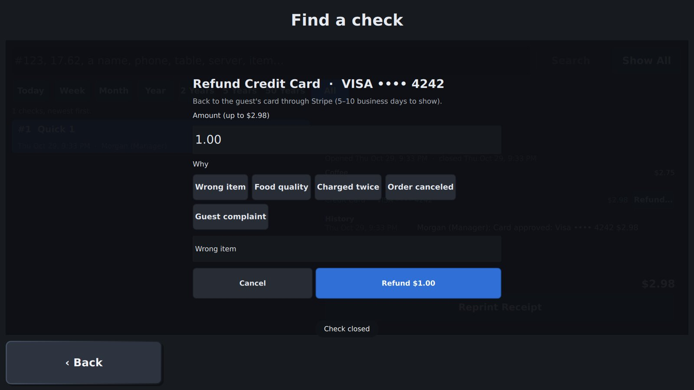
How much, and why |
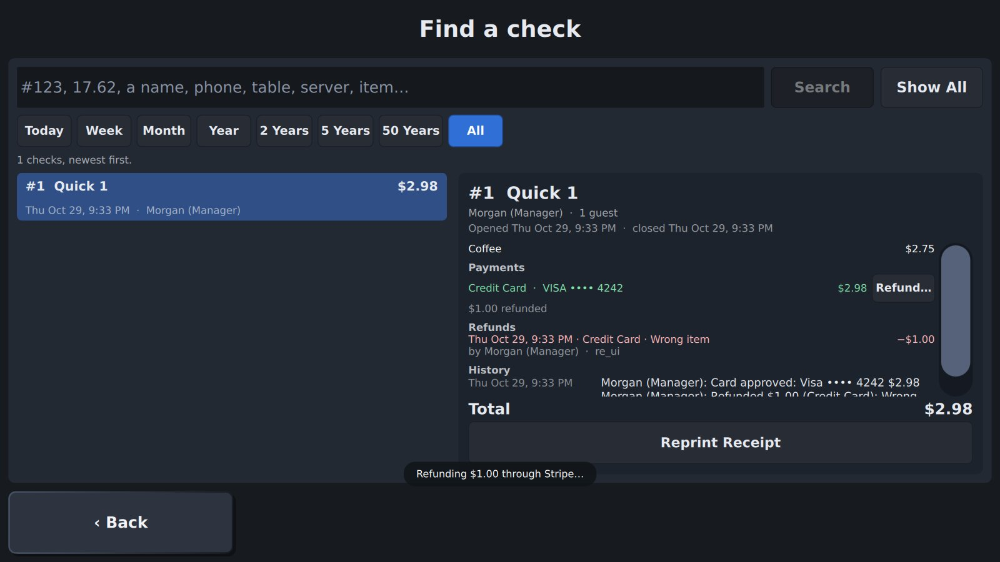
On the check, with who did it |
- A card from a Stripe reader goes back to the guest's card through Stripe right away; their bank shows it in 5–10 business days (often sooner when it's the same day).
- Cash comes out of your drawer (or your bank) as a refund pay-out, so the drawer still counts right.
- A card typed in (taken on another machine) is recorded here; give it back on that machine.
- Every refund goes in the check's history and on today's reports (Sales: a Refunds section and Collected after refunds; Deposit: Card refunds off the card batch), whatever day the check was from. You can't refund more than was paid.
- On a check that's still open, Undo Payment on a Stripe card refunds it, and also needs a manager.
From the order screen: Check… → Reopen a Closed Check…. Checks closed today; touch one to reopen it (managers). A refund is a reopen: void the item or take off the payment, then close again.
12. Reports and End of Day

Reports: the report along the top, the period below.
| Report | Shows |
|---|
| Sales | Checks, guests, item sales, discounts, tax, payments by type, card tips, averages. |
| Items / Categories | What sold, how many and for how much. |
| By Hour | Sales by the hour. |
| Servers | Each server's sales. |
| Tips | Card tips, gratuity, tip-outs, pool shares, paid and owed. |
| Labor | Clock in/out, breaks, hours today and this week, overtime, and labor cost: each person's pay, overtime at time and a half, and labor % of sales. |
| Drawer | Each bank or drawer: start, cash, pay outs, expected, counted, over/short. |
| Expenses | Cash paid out for expenses, by category (produce, ice, repairs…), then each one with who and why. |
| Audit | Every void, discount, reopen, transfer, move and merge, with who and when. |
| Gift Cards | Cards sold and spent, what's still on cards, house accounts. |
| Kitchen | Ticket times by station, late tickets, the slowest. |
| Food Cost | Each item's sales and recipe cost, and stock. |
| Menu Mix | In each category, every item by how well it sells and what it earns after food cost: Star (keep it), Workhorse (sells well, earns little: raise the price or make it for less), Hidden gem (earns well, sells slowly: show it off) and Weak (change it or take it off). Items not sold count too. |
| Purchases | Deliveries received today: by vendor, then each one's items and costs. |
Periods and last year
Day shows one business day (◀ ▶ for earlier days). This Week, Last Week, This Month, Last Month, This Year and Dates… cover a range. vs Last Year adds the same days a year before and the change.

Items last month against the same month a year before.

Labor |

Tips |

Kitchen times |

Food cost |

Gift cards and accounts |

Expenses |

Purchases |

Exceptions |

Deposit |

Customers |

Royalty |

Accounting |
- Exceptions: by employee, every void of something already sent, every discount and comp, payments and discounts taken back, reopened checks, moved or merged checks, and each time the drawer opened with no sale. Then the biggest ones. The first report to read when the cash is short.
- Customers: who comes back. Each customer's visits, spending, average check, last visit and favorite item, best customers first, for any dates.
- Royalty: for a franchise, the royalty and advertising fund on net sales (Store Settings sets the percents), for any dates.
- Accounting: the sales as a journal, debits and credits by account (Store Settings → Chart of accounts). Touch CSV to save it for QuickBooks or your accountant; the two totals always match.
- Deposit: tonight's trip to the bank. Each drawer's cash (counted, or what should be there), less the starting cash kept for tomorrow, is the deposit. Then the card batch the processor will pay, and the book balance: what was sold against what was collected, and whether the drawers were over or short.
Print prints a report on the receipt printer. CSV (for spreadsheets) and PDF save it to the exports folder.
End of Day

- It lists anything still in the way (open checks, drawers or banks not counted).
- Once everything is settled, Close the Day (touch twice) saves the day's reports and starts a new day.
- It also shows the last backup and a Back Up Now button.
13. Changing the screens (edit mode)

Edit mode: pages on the left, the page in the middle, settings on the right.
Every screen is a page of buttons you can change. Touch Manager → Edit Pages (or press F1 / Ctrl+E on a keyboard). Changes are a draft until you Save.
- Select: click a button; shift-click to add more; drag across empty space to select several.
- Move and resize: drag a button to move it, or a handle to resize it. Buttons snap to the grid and line up with guides.
- Add: + Button, + Text, + Image, + Panel (tables, check lists, keypads and more). A new one goes in free space near the middle.
- Copy, cut, delete, layer order: hold a button for its menu (or right-click with a mouse).
- Change: on the right, its label, colors, shape and font, and what it does when touched: + Add action (go to a page, add an item, a command…). A button can do several things in order; ▲ ▼ reorder them, ✕ removes one.
- Tables: on the Tables page, add a table with + Panel → Table, or Duplicate one (T7 becomes T8). Give each its name and seats.
- Undo / Redo every step (Ctrl+Z / Ctrl+Y). Done asks whether to save. On a small screen, swipe the tools sideways; Save and Done always stay in view.
Template pages share buttons: the order bar is on one template page, and every menu page uses it. Change it once and it changes everywhere.
Ready-made looks
In edit mode, the Theme tab starts with Looks: touch one and every screen takes its colors. Once your logo is set, two looks are made from its colors. Don't like it? Undo. Like it? Save.


Daylight |

Warm Café |
A menu that lays itself out
On the menu pages, Everything shows the whole menu: touch a family across the top, then an item. Items added in Manager → Menu appear there by themselves, with their price; sold-out ones are grayed.

Everything: Soup of the Day appeared as soon as it was added to the menu.
To put one on any page: edit mode → + Panel → Menu (self-filling), and set its Family (or leave it empty for all), Columns and Show photos.
Your logo and pictures
Make the screens yours. In Manager → Store Settings → Store logo, touch Add Picture… and pick your logo file. It shows on the login page and the screen saver (and on the customer display and kiosk). Turn on Print the logo on receipts to print it at the top of every receipt.

The login page |

The screen saver |

On a receipt |
Every button can have a picture: in edit mode select it, and set its Picture. The same field is on + Image buttons, and on the page's Background (with how the picture fits). Pictures you add are kept by the store, so every screen shows them.

A button's Picture: the store's pictures, a preview, and Add Picture….
Your brand's font works the same way: next to every Font list in edit mode, Add Font… takes a TTF or OTF file. Every screen gets it, and it appears in all the font lists.

Quick Order in the store's own font.
Preview on other screens
In edit mode, Preview… shows the page on a phone, a tablet, a terminal and an upright kiosk, and how big its smallest button comes out on each (about 9 mm is right for a finger). Red means too small to touch reliably there: make the buttons bigger, or give phones a phone version of the page.

Ready-made layouts, and sharing them
Don't want to move buttons one by one? In edit mode, touch Layouts…: the login page, the tables, the order screen, Pay and the kitchen screen each come with five arrangements, with a picture of each. Touch one to try it; Undo takes it back, Save keeps it.

Five layouts for the Tables page.

The Pay screen's five.
The same window shares designs with other stores. Export This Page… or Export Every Page… saves a file; on the other store, Use a Page File for This Page… makes the page you're on look like it (it keeps its name and job), Add a Page from a File… adds it as a new page, and Replace Every Page from a File… brings over a whole restaurant's screens.
The files carry the pictures the pages use and your custom fonts, so the other store gets the whole look in one file. (Each store keeps its own logo.)
Panels and their own buttons
Select a panel (the kitchen screen, the check, the payment panel…) and the right side shows more:
- Settings: what the panel does. Examples: a kitchen screen's station, or expediter mode; whether a check list shows open checks, bar tabs or closed ones; which report the reports panel opens on; how many columns of tables.
- Built-in buttons: hide any of the panel's own buttons, or give it other words ("All Day" → "Everything"). Hide all its buttons hides every one.
- Position (kitchen screen, choices, drawer): which built-in button comes first in its row.
- Built-in button look: color, text color, pressed color, font and corners of the panel's buttons. Set it on the Theme tab to change every panel at once.
Colors that mean something
On the Theme tab, Status colors sets the colors of a table with a check (and with your check, the one you're on, one seated a long time), of kitchen tickets as they get older, of the expediter's ready orders, and of the sold-out badge. Brand colors, or a high-contrast set for a bright kitchen.
Buttons that show only sometimes, and text that changes
Every button has Show only when on the right: who's logged in (a manager only, say), whether a check is open, the kind of check (takeout only), the meal period (lunch only) or the kind of screen (phones only). In edit mode you see all of them; the ones hidden right now are dimmed.
A button's text can change by itself: type Pay {check.balance} and it says "Pay $13.53". Others: {check.total}, {check.label}, {check.guests}, {check.items}, {check.due}, {user.name}, {store.name}, {time}, {date}. The text box's hint lists them.
Each panel button has a command, so a regular button can do the same anywhere: hide the kitchen screen's Recall and put a big red Recall kitchen ticket button at the bottom of the page. The commands include next station, All Day, recall, next seat, next course, fire course, done / cancel choosing, one more / fewer guest, no sale, pay out, back up.

The kitchen screen with red buttons, Recall hidden and All Day renamed.
14. Phones and tablets
Tablets show the same screens as the store. Phones get phone pages: big buttons in one column, portrait.
To add a tablet or phone, install the ViewTouch Android app and pair it (chapter 1). Manager → Terminals → Screen layout can force phone or standard pages for a screen.
The on-screen keyboard

On a touch screen, text fields bring up a keyboard (a number pad for numbers).
Touch any text field and the keyboard pops up over the screen: a number pad for phone numbers and amounts. The screen keeps its size; if the keyboard would cover the field, the screen slides up a little so you can see what you type, and back down after. ⏎ (or Done) saves the field, and ⌨▾ puts the keyboard away.
Phones and tablets use their own keyboard, which pops up over the screen the same way. PINs are always typed on ViewTouch's own number pad.
It is on for every screen, since most touch screens have no keyboard. A screen with a real keyboard can turn it off: Manager → Terminals → the screen → On-screen keyboard: Off.
15. Backups, safety and starting over
- Every sale is saved at once, so a power cut loses nothing already on the screen.
- Automatic backups: when ViewTouch starts, every 24 hours and after every End of Day. The newest 30 are kept.
- A second copy on a USB drive or network folder: Store Settings → Also copy backups to.
- Damaged database: if the database is damaged, ViewTouch won't use it. It names the newest good backup and the command to restore it.
- Restore (ViewTouch stopped):
sudo vtmodern --data-dir /var/lib/viewtouch --restore <backup file>.
Encrypted backups
A USB drive with backups on it holds every sale, customer and phone number. To lock them: Store Settings → Encrypt backups, then a Backup password (8 characters or more), and Save. From then on every backup and its second copy is a .vtbak file that only this password opens. Each one is opened again and checked as it's made.
- Restoring on the same computer needs nothing more. On another computer,
--restore asks for the password.
- Changing the password leaves older backups on the old one.
Write the backup password down and keep it somewhere safe. Without it, nobody can open an encrypted backup, not even ViewTouch's makers.
The live database on the store computer is protected by turning on disk encryption when installing the operating system (Fedora and Ubuntu: Encrypt my data). PINs are never stored, only scrambled (salted hashes).
Factory reset

Manager → Factory Reset…, type RESET. ViewTouch backs up, deletes everything (sales, customers, staff, menu, settings, page changes) and starts again with the starter set. The backup lets you undo it with --restore.
From the command line: vtmodern --factory-reset, and vtmodern --demo-data to fill an empty store with two months of demo history for training.
16. The self-order kiosk
A screen where guests order on their own and pay at the counter, with no help from staff.
Turning it on
- On the spot: log in as a manager, touch Manager → Self-Order Kiosk.
- Always: Manager → Terminals → the screen → Screen layout → Self-order kiosk. It starts as a kiosk every time it connects.
- From the command line:
vtmodern --self-order.
- Turning it off: hold the top-left corner of the kiosk for 3 seconds, then type a manager's PIN.
What the guest does

1. Touch to Order (then For Here or To Go) |

2. The menu and their order |

3. Choices (temperature, side…) |

4. A name to call the order by |

5. The order number, and "please pay at the counter".
- Their slip: as the order is placed, the kiosk's receipt printer (Manager → Terminals → the kiosk → Receipts and cash drawer on) prints a slip: the order number in big type, their name, For here or To go, what they ordered and the total, and "Please pay at the counter". The screen tells them to take it. At the counter they show it, and the cashier finds Kiosk 42 in Open Checks. Turn it off with Store Settings → Self-order kiosk: print an order slip.
- Categories on the left, dishes with their photo, description and price in the middle, their order and total on the right. × takes an item off; Start Over clears everything.
- Their way: for what comes on an item (a burger's lettuce, tomato, onion, pickles, mayo), the choices sheet lists What's on it, each with No · Light · Regular · Extra · On the side. Add-ons they choose (bacon, a dressing) can be Light, Extra or On the side too. The kitchen ticket says No Onion, Side of Mayo, Extra Bacon. In Manager → Modifier Groups, start an option with * for what comes on the item (
*Onion), and turn on Guests can ask for Light, Extra or On the side for groups like dressings and toppings (not temperatures or sizes). On staff screens, touching something that comes on it asks No, Lite, Extra or Side.
- Sold-out items show SOLD OUT and can't be ordered.
- While nobody is ordering, the kiosk shows the dishes' photos and the customer display's messages and pictures (Store Settings), with a pulsing Touch to Order.
- If nobody touches the screen for 90 seconds in the middle of an order, it asks Are you still there?. With no answer it clears the order and goes back to the welcome screen (Store Settings sets the time).
On a tall kiosk
On a portrait screen, such as a 21.5" floor-standing kiosk, the menu fills the screen with big photo cards. The categories, the order bar and every button sit at the bottom, within reach. Touch the order bar to see the order; choices come up from the bottom.

Attract |

Menu |

Choices |

Easy Reach |
Easy Reach (in the order bar) brings the whole menu down to the lower 60% of the screen for guests in a wheelchair, and children. Full Screen puts it back. It turns off by itself for the next guest.
The kiosk in your colors
Store Settings has a group of Self-order kiosk settings: the background, card, button and text colors (written like #1f8a4c), the font, a bigger or smaller size, and the words on the welcome button. Turn off ask For Here or To Go for a place where everything is for here, and ask for a name to call orders by number only. Easy Reach button hides that button. The accent color, logo and pictures come from the customer display settings.

A light kiosk: welcome |

Its menu |
At the counter
The order waits in Open Checks as Kiosk 42, with the guest's name. The cashier opens it, takes the payment and closes it. Closing sends it to the kitchen. With Store Settings → Self-order kiosk: send orders to the kitchen at once, it goes to the kitchen as soon as the guest finishes instead.
What guests can order
Every menu item except modifiers (they appear as choices), items marked Not on the self-order kiosk, and alcohol, which never shows there. Give items a Description and a Photo in Manager → Menu Items. A photo is an image file on the store's computer (for example in /var/lib/viewtouch/photos). Kiosks connected over the network get it from there.
Card payments at the kiosk will come with card readers. Until then, guests pay at the counter.
17. Languages (Español)
The screens come in English and Spanish.
- Each person's own: Manager → Employees → the person → Language. The screen switches when they log in and back when they log out. On a store with several screens, each speaks its own user's language, messages included.
- The store's: Manager → Store Settings → Language. Used on screens nobody is logged in to, for people without their own, and for everything guests see: the customer display, the self-order kiosk, receipts and kitchen tickets.

Rosa's floor plan |

Taking an order in Spanish |
Menu items, modifier groups and their options stay as you typed them, because the check, the kitchen and receipts use those names. To translate your own buttons or any phrase, put a file translations/es.json in ViewTouch's data folder, for example {"Burger of the Day": "Hamburguesa del día"}.
18. Keep running if a computer fails
A second store computer can be the standby. It keeps a live copy of everything and takes over if the main computer stops.
Setting it up
- On any store screen: Manager → Terminals → Pair a Device, and note the code.
- On the second computer:
vtmodern --standby auto --pair <code> (once). From then on, vtmodern --standby auto, best as a service.
When the main computer stops
- The screens say The main server isn't answering. The standby computer takes over in a few seconds.
- After 20 seconds the standby becomes the main computer: same store, same screens, same check numbers. The screens find it and reconnect by themselves.
- A manager can touch Take Over Now on a screen and type their PIN to skip the wait.
- When the old main computer comes back, it sees the store running elsewhere and becomes the new standby. It first keeps its own data as a
…-before-standby.db backup.
Manager → Network

Network: this computer, the standby, the screens connected (and who is on them), and how each printer did last.
If the cable between the two computers breaks while both keep running, both may take orders for a few seconds. Orders taken on the old main computer in that time are only in its -before-standby backup.
19. Quick reference
Where things are
| To… | Go to |
|---|
| Rush a check | Order screen → Check… → Rush |
| Mark an item sold out | Check… → Sold Out (86)…, or Manager → Sold Out |
| Find a customer / use rewards | Check… → Customer… |
| Sell a gift card | Check… → Sell / Check a Gift Card… |
| Find an old check, reprint a receipt | Manager → Find a Check… |
| Refund a closed check (any day) | Manager → Find a Check… → the check → Refund… |
| Refund | Check… → Reopen a Closed Check… (manager) → void / undo payment → close |
| Ask for a tip on the guest screen | Pay → Ask Guest for Tip |
| Check out your cash | Log Out → My Bank… |
| Seat a waiting party | Tables → Host Stand → the party → their table(s) → Seat |
| Mark a table clean | Tables → Host Stand → the table → Mark Available |
| Change a price | Manager → Menu → the item → Price → Save |
| Add a person | Manager → Employees → + Add |
| Pair a tablet | Manager → Terminals → Pair a Device |
| Close the day | Manager → End of Day |
| Close ViewTouch on a screen | Manager → Close ViewTouch (twice) |
| Make a screen a self-order kiosk | Manager → Self-Order Kiosk |
| Leave the self-order kiosk | Hold the top-left corner 3 seconds → manager PIN |
| Someone's screens in Spanish | Manager → Employees → Language |
| Is the standby in sync? Are printers OK? | Manager → Network… |
| Encrypt backups | Manager → Settings → Encrypt backups + Backup password |
Keys (with a keyboard)
| Key | Does |
|---|
| Esc | Back a page |
| Home | Home page |
| F1 or Ctrl+E | Edit pages (managers) |
| F11 or Ctrl+Shift+F | Full screen / window (not on kiosk screens) |